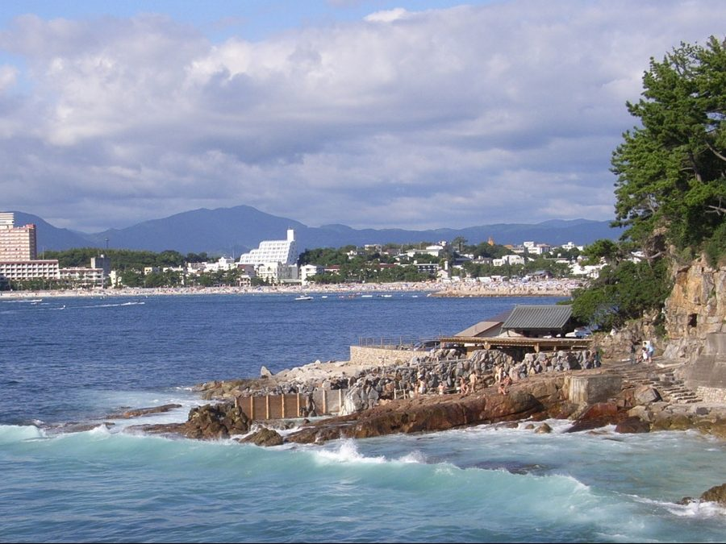
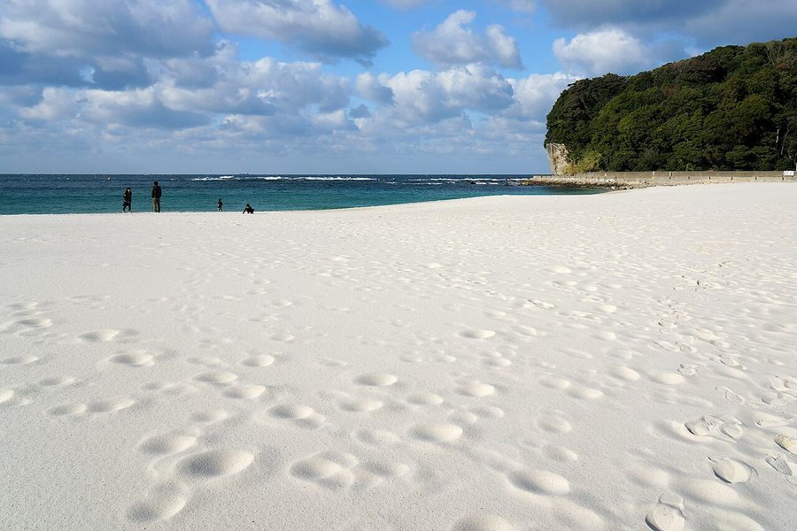
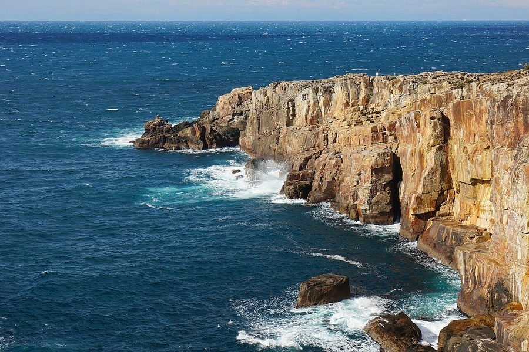
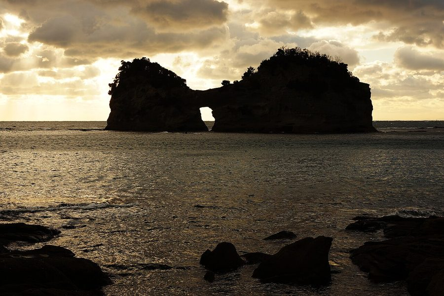

和歌山県西牟婁郡白浜町の日帰り温泉・銭湯・サウナ（32件）
寄り道スポット検索アプリ「ヨッテコ」の収録データから、和歌山県西牟婁郡白浜町の日帰り温泉・銭湯・サウナを営業時間・料金つきで一覧にしました（2026年8月時点）。
最も安いのは松乃湯（300円）。最も遅くまで入れるのはIn the Outdoor白浜志原海岸 SAUNA AALTO（翌5:30まで）。朝風呂なら南紀白浜マリオットホテル（5:00開店）。
和歌山県西牟婁郡白浜町はどんなまち？
数字で見る🔍和歌山県西牟婁郡白浜町
まちの横顔




- 地形と気候: 和歌山県南西部、太平洋に面した町です。北は2か所に分かれて田辺市と接し、その間に上富田町があるほか、南はすさみ町、東はわずかに古座川町と隣り合います。沖合を流れる黒潮の恩恵で一年を通じて温暖な気候として知られ、夏の海では小さな熱帯魚と一緒に泳ぐこともできます。
- 観光: 奈良時代から温泉街として知られ、南紀白浜と呼ばれることもあります。南紀白浜温泉や、古くからその奥座敷とされる椿温泉など温泉が多く湧出し、年間を通じて近畿を中心に観光客が訪れます。白良浜などの海水浴場の周辺にはリゾート施設や企業・団体の保養所が集まり、世界遺産・熊野古道の大辺路ルート（富田坂・仏坂）も町内を通っています。南紀白浜空港には近年、台湾などからのチャーター便も就航しています。
寄り道充実度（全国偏差値）
偏差値・順位は、ヨッテコ収録データ（2026年8月時点・26,033件）を市区町村別に集計した施設数の全国分布（1,728市区町村）から毎回算出しています。カードを押すとカテゴリ別の分析に切り替わります。
日帰り温泉から見た和歌山県西牟婁郡白浜町
町内の日帰り温泉は32件、全国61位タイ（上位3.5%）。——数のうえでは、はっきり湯の多いまち。
- 59%の店に露天風呂があります。全国水準は46%です。南海トラフ巨大地震で最大10メートルの津波の到達が想定される太平洋岸の町。屋根のない湯船が当たり前、という土地柄なのでしょうか。
- 94%の店が天然温泉です。全国水準は67%です。奈良時代からの歴史を持つ南紀白浜温泉で知られ、年間を通じて近畿を中心に観光客が訪れる町。沸かし湯ではなく源泉が前提で、温泉そのものがまちの資源になっています。
- 44%——サウナの併設率は、全国の52%に届きません。主役はあくまで湯船、という構成でしょうか。
- 入浴料（判明22件）の中央値は900円。全国（650円）より38%高めです。予算を見ておくなら、900円を目安にできます。
出典: 施設データ=ヨッテコ収録データ（26,033件・2026年8月時点）。偏差値・全国順位・全国水準は全1,728市区町村の分布から毎回算出。 / 人口=総務省「住民基本台帳に基づく人口、人口動態及び世帯数」（2026年1月1日現在） / 面積=国土地理院「全国都道府県市区町村別面積調」（2026年4月1日時点） / 森林率=農林水産省「2025年農林業センサス（農山村地域調査）」市区町村別林野率（2025年、林野率（林野面積÷総土地面積）） / 年平均気温=気象庁「平年値（1991-2020年）」。市区町村の代表点（国土交通省「大字・町丁目レベル位置参照情報」）から最も近い観測点の値 / まちの解説=日本語版Wikipedia「白浜町」（https://ja.wikipedia.org/wiki/白浜町、2026年8月21日取得、CC BY-SA 4.0）より作成 / 写真=Wikimedia Commons（各キャプションに作者・ライセンスを記載）
曜日別の営業施設数
| 月 | 火 | 水 | 木 | 金 | 土 | 日 |
|---|---|---|---|---|---|---|
| 32 | 30 | 30 | 32 | 32 | 32 | 32 |
火・水曜日が最も休みが多く（各2件が定休）、年中無休は28件です。※営業時間データのある32件で集計
入浴料金の分布（大人）
| 500円以下 | 4件 | |
| 501〜800円 | 4件 | |
| 801〜1,200円 | 11件 | |
| 1,201円以上 | 3件 |
料金が確認できた22件で集計。
施設一覧
| 施設 | 営業時間 | 料金（大人） |
|---|---|---|
| HOTEL SHIRAHAMAKAN 白浜館 天然温泉露天風呂 白浜温泉の含硫黄泉をかけ流しで楽しめるホテル。湯の花の滝が壮観な大浴場と、開放的な露天風呂が自慢。 | 13:00〜22:00 | 1,000円 |
| In the Outdoor白浜志原海岸 SAUNA AALTO サウナ | 15:00〜29:30 ※曜日により異なる | 3,500円 |
| ⽢露の湯の宿 湯処むろべ 天然温泉露天風呂サウナ ナトリウム・炭酸水素塩・塩化物泉の温泉宿。24時間利用可能な開放的な露天風呂とサウナを完備した宿泊施設。 | 13:00〜15:00 | — |
| えびね温泉 天然温泉 | 10:30〜18:00 | 650円 |
| とれとれ亭 カタタの湯 天然温泉露天風呂 良質な白浜温泉をナノウォーター技術で導入した温浴施設。化粧水のような肌触りで湯冷めしない仕上がり。海鮮バイキングレストラ… | 08:00〜22:00 | 530円 |
| クリスタル旅館 白浜 灯りや 天然温泉 クリスタル旅館 白浜 灯りや。白浜温泉の藤乃湯源泉を引き込んだ含硫黄、ナトリウム、塩化物、炭酸水素塩泉の温泉。神経痛と関… | 09:00〜18:00 | 850円 |
| グランパスSea 天然温泉露天風呂 海辺に位置するグランパスSea。ナトリウム一塩化物・炭化水素塩温泉を源泉とし、疲労回復と冷え性に効果のある温泉が特徴。 | 17:00〜23:00 ※曜日により異なる | — |
| ホテルサンリゾート白浜 天然温泉露天風呂サウナ 白浜温泉のリゾートホテル。全室露天またはつぼ湯付き客室。海を望む展望温泉露天風呂が自慢。 | 15:00〜20:00 | — |
| ホテル三楽荘 天然温泉 白浜温泉の2源泉をかけ流しで楽しめる。「藤の湯」は美肌効果、「衝幹の湯」は保温効果が特徴的。 | 15:00〜21:00 | — |
| リゾートホテル ルアンドン白浜 天然温泉 | 09:00〜18:00 | 5,000円 |
| リヴァージュ・スパひきがわ 天然温泉露天風呂サウナ 和歌山県白浜町の海岸沿い温泉施設。pH10を超える関西屈指の強アルカリ泉が特徴で、トロトロの泉質で肌がつるつるになると評… | 14:00〜20:00 ※曜日により異なる | — |
| 南紀白浜 梅樽温泉 ホテルシーモア 天然温泉露天風呂 南紀白浜に位置するホテルシーモア。砿湯2号と行幸源泉の複数の源泉を有する温泉ホテル。日帰り入浴で13:00-20:00に… | 13:00〜20:00 | 1,000円 |
| 南紀白浜マリオットホテル 天然温泉露天風呂 日本三古湯の白浜温泉。ホテル最上階の温泉大浴場の露天風呂から太平洋を眺めながら入浴。5つの貸切温泉も完備。 | 05:00〜24:00 ※曜日により異なる | 1,100円 |
| 南紀白浜温泉 ホテル川久 天然温泉露天風呂サウナ | 13:00〜20:00 | — |
| 南紀白浜温泉 民宿Aコース 天然温泉 南紀白浜温泉に位置する民宿Aコース。含硫黄- ナトリウム- 塩化物・炭酸水素塩泉の温泉が利用できる民宿施設。 | 09:00〜18:00 | — |
| 大江戸温泉物語 Premium 白浜御苑 天然温泉サウナ | 07:00〜24:00 | 900円 |
| 大江戸温泉物語Premium 白浜彩朝楽 天然温泉露天風呂サウナ | 07:00〜24:00 | 900円 |
| 天空のリゾート四季 SHIOSAI TERRACE サウナ 白浜の景色を一望できる絶景の露天風呂と、全国でも珍しい薪サウナ、フィンランド式水風呂が特徴的なスパ施設。 | 15:00〜22:30 | 4,000円 |
| 松乃湯 天然温泉 | 13:00〜21:00（火休） | 300円 |
| 椿温泉 しらさぎ 天然温泉 海抜60mの展望風呂が自慢。太平洋を一望でき、滑らかで「ツルツル」という表現がぴったりな美肌の湯。源泉100%かけ流し。 | 11:00〜20:00 | 700円 |
| 癒しの宿 クアハウス白浜 天然温泉露天風呂サウナ 含硫黄−ナトリウム−炭酸水素塩・塩化物泉を引き込んだ日帰り温泉。クアハウス白浜で美肌効果と疲労回復を目的とした温泉入浴が… | 10:00〜22:00 | — |
| 白浜古賀の井 大自然の湯 天然温泉露天風呂サウナ ナトリウム炭酸水素塩・塩化物泉を源泉とする大自然の湯。露天風呂とサウナを備え、美肌効果のある温泉が楽しめる日帰り温泉施設… | 11:00〜15:00 | 1,200円 |
| 白浜温泉 とれとれの湯 天然温泉露天風呂サウナ 白浜温泉の源泉を活かした施設。太平洋を望む露天風呂、日本唯一の岩塩敷きの「塩」の部屋など個性的な岩盤浴が自慢。サウナも完… | 09:00〜23:00 | 980円 |
| 白浜温泉 民宿ことぶき 天然温泉 白浜温泉の行幸源泉をかけ流しで楽しむ民宿。お肌つるつると評判で、心も体もリフレッシュできる。 | 10:00〜15:00 | 500円 |
| 白浜温泉 浜千鳥の湯 海舟 天然温泉露天風呂サウナ 太平洋に突き出した岬の先端に建つリゾート。展望露天風呂から海を一望できる白浜温泉かけ流し施設。 | 17:00〜21:00 | — |
| 白浜温泉 牟婁の湯 天然温泉 白浜温泉の代表的な外湯で、砿湯（まぶゆ）と行幸湯（みゆきゆ）の2種類の源泉から引かれたお湯が楽しめる歴史ある温泉施設。 | 09:00〜21:45 ※曜日により異なる | 420円 |
| 白浜温泉 白良湯 天然温泉 | 07:00〜22:30 | 420円 |
| 白良荘グランドホテル 天然温泉露天風呂 白良浜を一望できる展望風呂「潮風」と、海音聞こえる露天風呂「松風」。2種類の浴場で白浜温泉をかけ流しで楽しめる。 | 15:00〜21:00 | 1,100円 |
| 紀州・白浜温泉むさし 天然温泉露天風呂サウナ 白浜温泉で唯一2種類の源泉を有し、露天風呂からの海の景観と複数の浴場設備で、上質な温泉体験が得られる旅館。 | 15:00〜22:00 | 1,100円 |
| 紀州椿温泉 椿はなの湯 天然温泉露天風呂サウナ 熊野古道大辺路の秘湯として約400年前に発見された椿温泉。源泉かけ流しで、まるで油に浸かったかのようななめらかな泉質が特… | 11:00〜20:00（火休） | 700円 |
| 長生の湯 天然温泉露天風呂 昭和の初期から使われていた木造倉庫の骨組みをそのまま使用した懐かしく安らげる日帰り温泉。備長炭風呂など3種類の風呂が楽し… | 10:00〜22:00（水休） | 900円 |
| 露天風呂しらすな 天然温泉露天風呂 | 12:00〜15:00 | — |